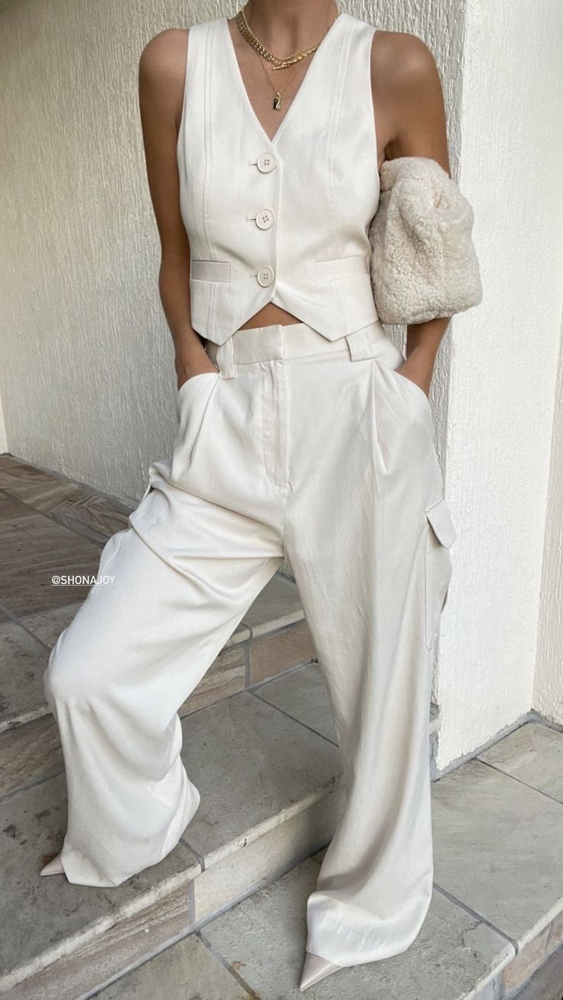
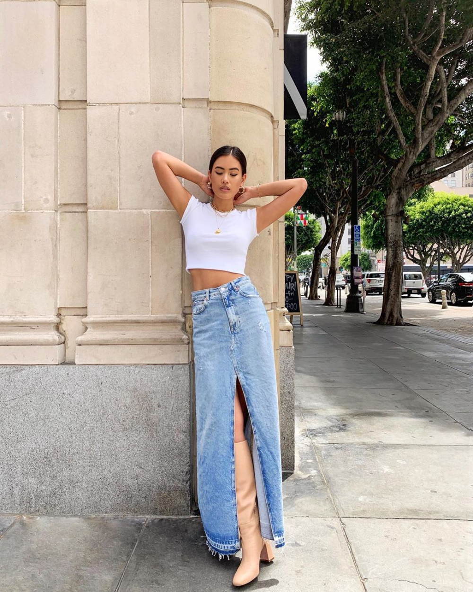
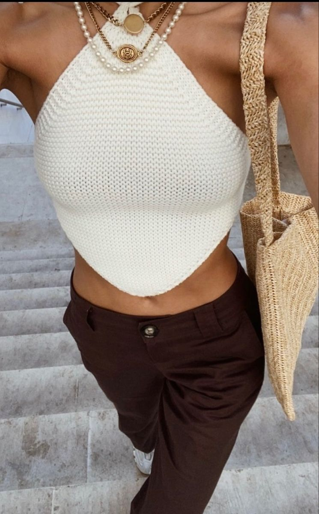
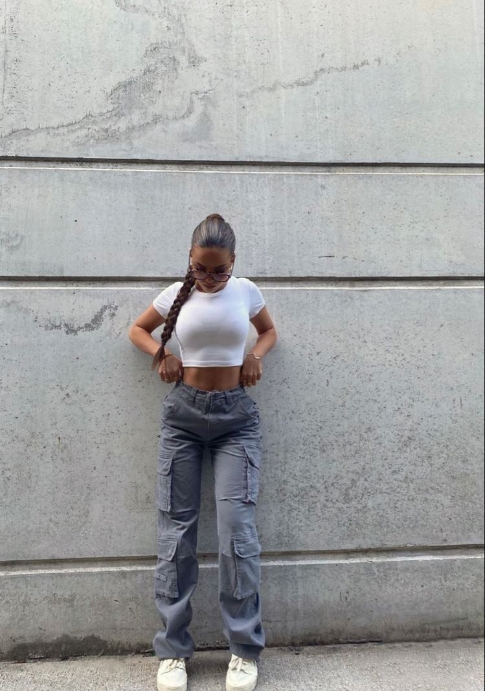

Les ensembles en lin blanc sont un choix parfait pour les journées ensoleillées, offrant à la fois confort et sophistication. Que vous vous promeniez sur la plage, flâniez dans un jardin luxuriant ou participiez à une fête estivale, ces tenues polyvalentes s'adaptent à toutes les occasions. Les ensembles en lin blanc pour l'été sont non seulement élégants, mais aussi pratiques, car le lin est un tissu naturellement respirant qui vous aidera à rester frais et à l'aise même par temps chaud. Alors, préparez-vous à embrasser la saison estivale avec style en arborant ces ensembles légers, intemporels et pleins de charme.
Le denim, une tendance incontournable de l'été, est le symbole intemporel du style décontracté et branché. Que ce soit sous la forme d'une veste en jean, d'un short ou d'une jupe, le denim est polyvalent et s'adapte à toutes les occasions. Ce tissu résistant et durable apporte une touche de caractère à n'importe quelle tenue. Son allure décontractée et décontractée en fait un choix idéal pour les journées ensoleillées et les escapades estivales.
Le crochet, une tendance estivale en vogue, apporte une touche de charme bohème à votre garde-robe. Avec ses motifs délicats et sa texture artisanale, le crochet crée des pièces uniques qui capturent l'esprit de l'été. Des robes aériennes aux tops légèrement transparents, le crochet se décline dans une multitude de styles et de couleurs. Que ce soit en bord de mer ou en soirée, une pièce en crochet ajoute une note de féminité et de romantisme à votre tenue.
 Les pantalons cargo allient style et fonctionnalité. Avec leurs multiples poches et leur silhouette décontractée, ils offrent un mélange parfait de confort et d'élégance décontractée. Disponibles dans une variété de couleurs et de tissus, ils s'adaptent à tous les goûts et styles. Associez-les à un t-shirt basique et des baskets pour un look décontracté, ou ajoutez une touche chic en les associant à un chemisier et des sandales à talons.